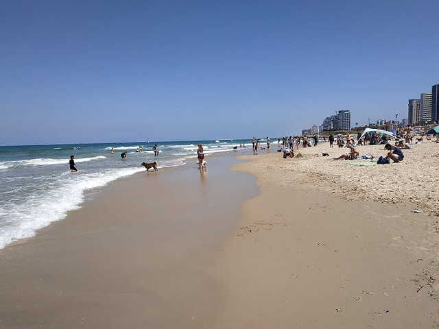
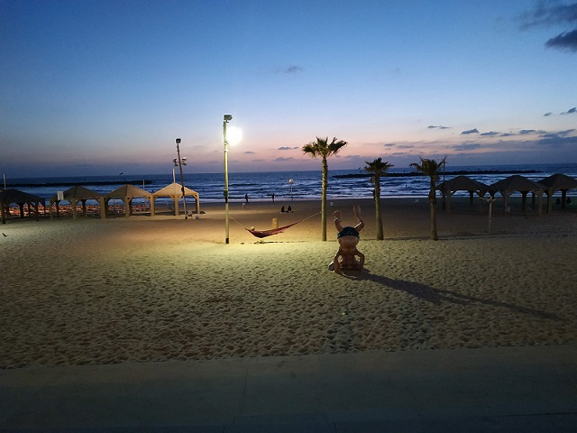
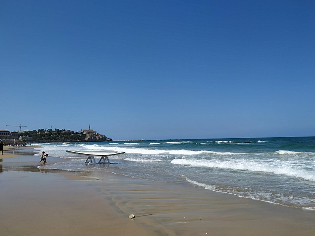
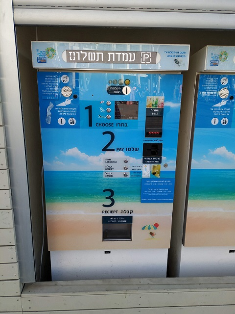
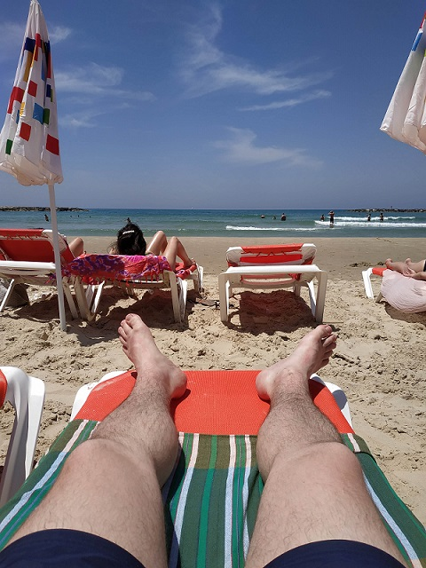
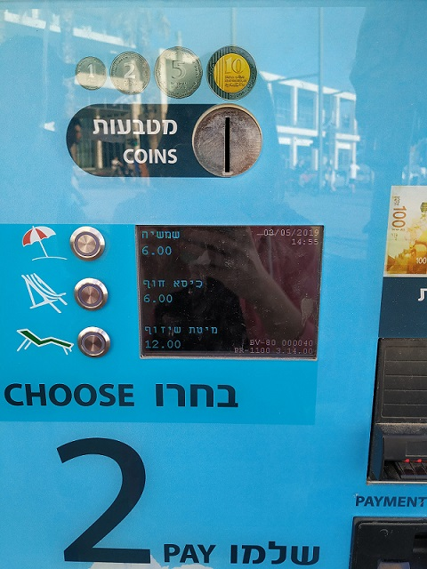

How do you think, what do people, who live far away frome a sea and in quite cold climate, as soon as came to a beach country? Any guesses? Right - leave a baggage at a hotel and right away come to the nearest beach. We didn't know the way to the beach and unintentionally went to the dog's one.
It's so nice to see how dogs walked and run there, playing to each other and with people. Those pets were really happy. We spen there may be about an hour just sitting and watching them and enjoying the sun and a warmth weather.
The beach line in Tel Aviv is awesome. It's so long and quite width. The beach separated by areas with sunbeds and just free spaces where people can have a reast on their beach towels.



It was a first country we payed for sunbeds by card. Also, there was possible to buy suncream, umbrellas, beach chairs and everything were sold througth a vendind machine.
Water was quite warm at the start of May. The sea deepens very slowly and it was really clean. Also, there were some places for serfers. I didn't know that serfing is so popular in Tel Aviv untile I came. Unfortunately, I'm not good at swimming and hardly likely to try it some day.



That trip we didn't spend a lot of time at a beach, preffering just walking along the sealine at evenings, and walking in a city. There were a lot to see.
Summaries:
1 – It would be greate to be able to swim.
2 – I deafinetly want to live near a sea, or spend at least one season living in a such country.